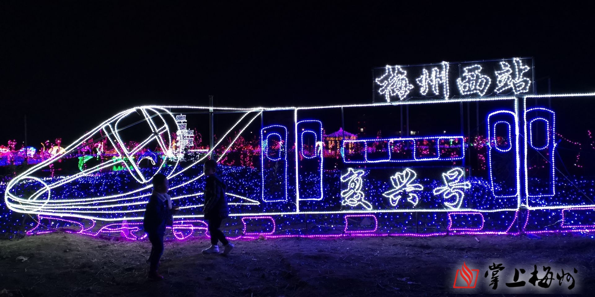
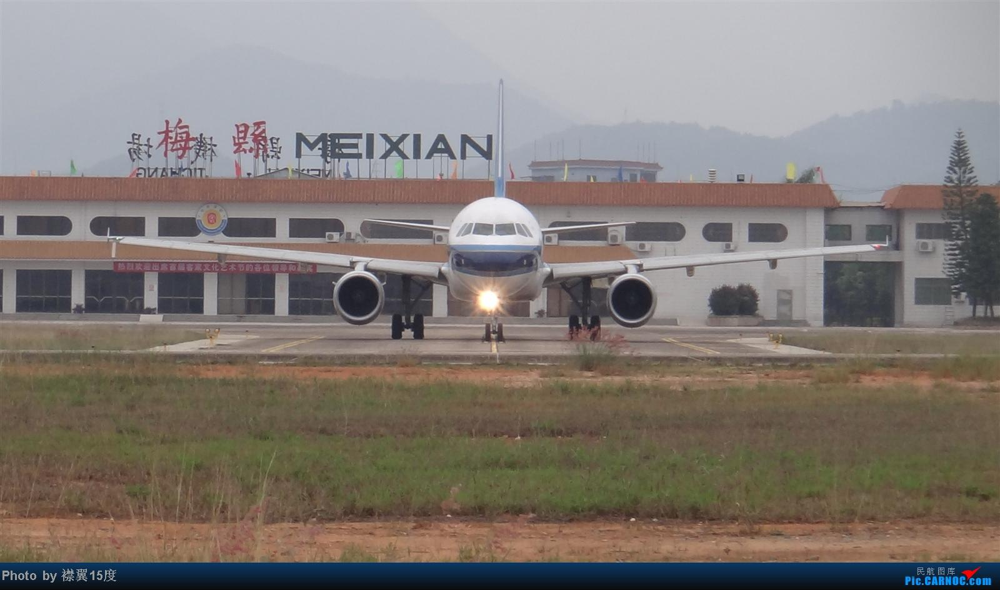
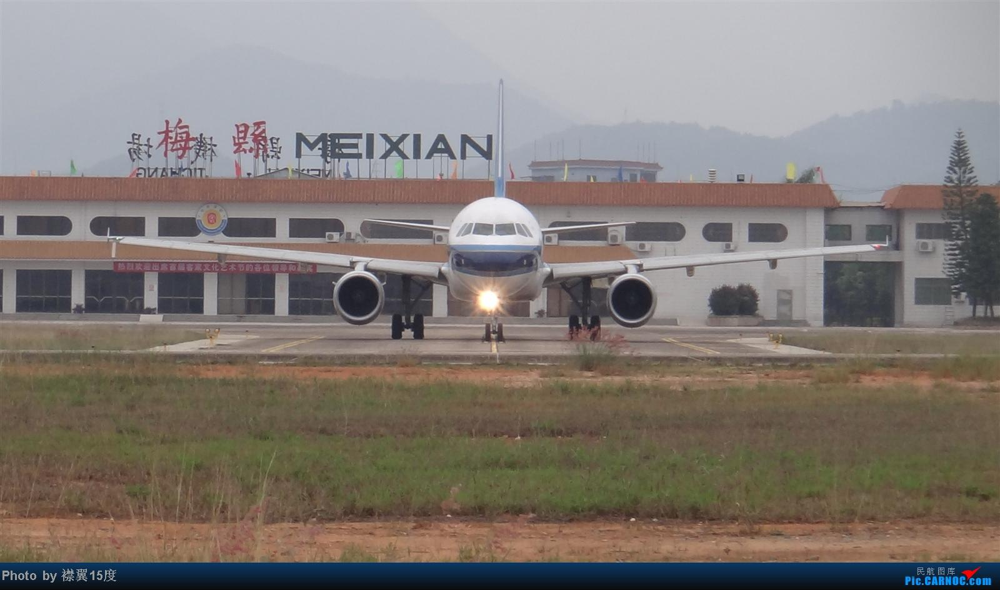

梅州交通发展
欢迎来到梅州

梅州市规划建设11个高铁站，截止目前为止有4个高铁站开通使用，2个高铁站在建设中，5个高铁站在规划审批中；
在开通的4个高铁站中有二个站分布在城区，还有二个高铁站分布在丰顺县，这4个高铁站都是位于梅汕高铁线上的站点
另外5个县级单位还没有开通高铁站，不过五华县和兴宁市的高铁站都在建设中，要不了多久就可以开通，圆上二地人民的高铁梦，
在开通的4个高铁站中有二个站分布在城区，还有二个高铁站分布在丰顺县，这4个高铁站都是位于梅汕高铁线上的站点
另外5个县级单位还没有开通高铁站，不过五华县和兴宁市的高铁站都在建设中，要不了多久就可以开通，圆上二地人民的高铁梦，
梅州梅县机场，位于广东省梅州市梅江三角镇，离梅州市中心很近，约4公里，和在市内几乎没什么区别，市民乘坐飞机非常方便。
梅州梅县机场特别使用客家话作为一种登机广播语言。梅州有很多著名的景点， 如5A级的雁南飞茶田度假村，以及雁鸣湖旅游度假村、灵光寺、五指石风景区、梅州古城等等，每年有数千万人前往梅州旅游观光，梅州梅县机场非常繁忙。 
梅州梅县机场特别使用客家话作为一种登机广播语言。梅州有很多著名的景点， 如5A级的雁南飞茶田度假村，以及雁鸣湖旅游度假村、灵光寺、五指石风景区、梅州古城等等，每年有数千万人前往梅州旅游观光，梅州梅县机场非常繁忙。 